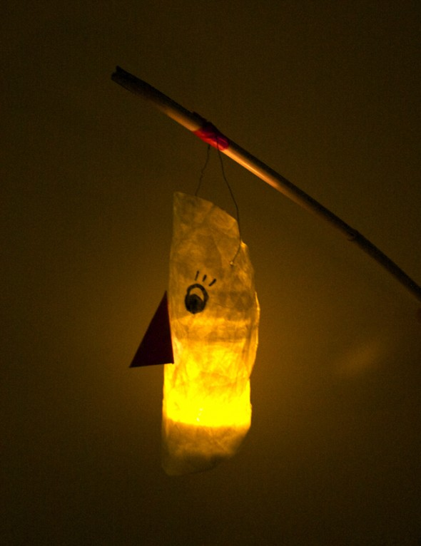

Facebook
Pinterest
Instagram
ES
EN
DE
☰ Menü
Home
Das Haus
Zubehör
Dekoration
Faltanleitung
Illustration
Trinkflaschen
Bastelheft
App
Blog
Feste
Weihnachten
Ostern
Halloween
Fasching & Kostüme
Valentinstag
Geburtstag
Mutter-/Vatertag
Schulanfang
Jahreszeiten
Frühling
Sommer
Herbst
Winter
Was machen
Spielzeug
Spiele
Druckvorlagen
Essen & Rezepte
Dekoration
Malen
Experimente
Draußen
Lernen
Tiere
Geschenke & Schmuck
Bauen & Tricks
Weitere Ideen
Material
Papier
Karton
Papierrollen
Recycling
Steine
Blätter & Natur
Stoff & Nähen
Start
›
Blog
›
Papier
Papier
Kategorie
Material
Geschenkpapier
Material
Geschenk Box
Papier
Geschenk
Aktivität
Fliegende Elfen
Obst
Skizzenbuch
Konstruieren
Zelte
Material
Laterne

Material
Marmoriertes Papier
Material
Papierkugeln
Aktivität
Zeitungen
Material
Girlande
Material
Spinnennetz
Material
Tiere
Aktivität
Briefpapier
Material
Von Hannah
Material
Blumen 02
Aktivität
Strassen
Aktivität
Familie
Material
Königliche Krone
Aktivität
Fenster
Papier
Muttertag
Aktivität
Finger Hase
Papier
Drache
Papier
Guirlande
← Neuere
Seite 3 / 4
Ältere →